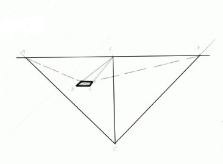
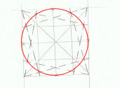

Vous allez apprendre à mettre en œuvre la fameuse perspective. Mais avant tout, vous devez sûrement vous poser une question :
La perspective, qu'est-ce exactement ?
C'est une technique utilisée pour embêter les dessinateurs donner au dessin un aspect très réaliste selon le point de vue choisi. C'est-à-dire que les éléments du décor que vous voulez dessiner seront représentés en 3 dimensions mais sur une surface plane (en l'occurrence votre feuille). Mais je vous rassure, ça paraît plus compliqué que ça ne l'est en réalité ! :-°
La perspective, enfin... Elle vous rappelera sûrement les longs et fastidieux cours de maths car c'est une technique purement mathématique (géométrique).
On passe directement à la pratique. Un schéma relativement simple doit être incrusté dans votre tête, le voici :
Qu'est-ce que tous ces traits ?
La ligne horizontale est appelée l'horizon, c'est à ce niveau que l'observateur voit la scène. Par exemple, si un objet est placé au-dessus de l'horizon, l'observateur verra l'objet d'en bas alors que si l'objet est placé en bas de la ligne d'horizon, l'observateur le verra depuis le haut.
Le point F s'appelle point de fuite : n'oubliez jamais ce nom ! Enfin, n'oubliez jamais ce qu'il signifie en tout cas. Il est le point où les lignes des objets de la scène convergent. Il peut y avoir plusieurs points de fuite (jusqu'à trois).
Les points A, B et C sont équidistants (je vous avait dit que ça vous rappellerait les maths :-° ) au point de fuite F. Si vous ne savez pas (ou plus) ce que signifie équidistant : les trois points sont à égale distance du point F.
Le cône ACB représente l'ensemble de la vision de l'observateur au point C.
Essayez de reproduire ce schéma (avec la règle bien sûr). Une fois que vous y serez arrivé, vous allez dessiner un carré en perspective.
Maintenant, passons à des petits exercices d'application.
Exercice 1 : le carré
Tout d'abord, tracez l'arrête frontale (celle qui est la plus proche de vous) puis nommez ses points D et E. Reliez D et E au point de fuite F (un crayon 2H serait pratique dans ce type de cas où il faut tracer des traits fins). Vous obtiendrez ceci :
Ensuite, tracez des traits en pointillés partant de A à E et de B à D. Les pointillés sont utilisés pour se différencier des traits de point du fuite, même si ce n'est pas nécessaire.
Vous n'avez maintenant plus qu'à tracer les derniers côtés et c'est fini : vous avez dessiné votre premier carré en perspective ! Félicitations !

J'ai quand même refait d'autres carrés pour vous montrer que, dans la perspective, si un dessin est réalisé au-dessus de la ligne d'horizon il est au-dessus de l'observateur et inversement (comme je vous ai dit plus haut).
Mais le plus intéressant dans la perspective, ce sont les objets en trois dimensions. Au lieu de dessiner un carré, nous allons maintenant dessiner un cube !
Exercice 2 : le cube
Refaites un schéma de perspective et placez un carré entier de face puis, comme pour le carré, tracez les lignes rejoignant le point de fuite. Remarque : je marque encore le nom des points mais ce n'est pas utile. C'est simplement une petite aide de compréhension pour le début.
Ensuite, tracez les traits depuis les points A et B puis reliez les côtés (là aussi, j'ai refait un exemple pour vous montrer depuis le haut et depuis le bas).
Voici un agrandi :
Voilà, rien de sorcier n'est-ce pas ? Nous allons maintenant apprendre (enfin, vous allez apprendre) la perspective à 2 et 3 points de fuite.
La perspective à deux points de fuite est très similaire à celle utilisant un seul point. Son schéma comporte toujours la ligne d'horizon et deux points de fuite placés sur les côtés.
Entraînez-vous encore pour cette technique. Je ne vais pas en dire plus car elle est quasi-identique à la précédente, il n'y a que de légers changements.
La perspective à 3 points de fuite
Encore très similaire aux deux autres, elle est très souvent utilisée pour les décors comme des gratte-ciels car généralement, un homme normal est plus petit qu'un immeuble... Cette technique va donc donner une forte impression de hauteur.
On la construit comme celle à 2 points de fuite mais on en rajoute un troisième en haut de la ligne d'horizon (il n'y à pas de hauteur conventionnelle pour le troisième point de fuite, mais mettez-le au moins à la moitié de l'espace entre les deux autres points de fuite). Entraînez-vous encore à réaliser ces schémas.
Autres techniques
Formes complexes
C'est exact, ces cubes et parallélépipèdes rectangles servent juste à vous entraîner. Mais ils vont maintenant nous servir à insérer des formes complexes dans notre perspective.
Pour faire une forme complexe en perspective, il faut la dessiner "plate", c'est-à-dire à plat, et l'entourer d'un rectangle. Ensuite, il faut quadriller ce rectangle en colonnes et lignes régulières. Pour aller plus vite, dessinez d'abord vos colonnes puis tracez une des diagonales du rectangle : les points d'intersections avec les colonnes vous indiqueront l'emplacement des lignes. Pour être plus précis, tracez les deux diagonales. Vous devriez obtenir à peu près ceci (tout dépend de la forme que vous avez choisie) :
Cette forme est symétrique mais vous n'êtes pas obligé de faire comme moi. Il faut maintenant convertir cette forme en perspective (j'ai choisi la perspective à 2 points mais vous pouvez choisir celle que vous désirez). Vous retracerez l'emplacement des traits grâce au quadrillage de la forme à plat que vous reproduirez en perspective.
Vous pouvez la laisser plate comme sur l'exemple ou lui donner du volume. Pour ce faire, prolongez les traits de quadrillage vers le point de fuite souhaité puis allongez les traits de votre forme de la longueur voulue.
Le résultat final en gommant les traits inutiles :
Les cercles dans la perspective
Dessiner des formes comme des rectangles ou des cubes, c'est bien beau...
Et les cercles ! comment fait-on ?
C'est très simple (comme le reste en fait). Le cercle doit être considéré comme un forme complexe : il faut d'abord la dessiner à plat puis l'entourer d'un rectangle (ou l'inverse). Le quadrillage va être un peu plus complexe que pour un autre forme. Le voici :
o_O Mais je comprends rien avec tout ces traits !
Voici quelques explications
Le quadrillage et les diagonales :
Des traits qui partent des 4 coins et qui arrivent sur les extrémités des lignes adjacentes :
Nous arrivons donc à trouver les points d'intersection suivants :
Et les relier (sans compas) pour former notre cercle.

Maintenant, il faut mettre ce cercle en perspective (1 point de fuite pour débuter) :
Trouver les points d'intersection :
Et enfin les relier pour former le cercle :
Le résultat final :
On peut aussi faire un cercle en 3D.
Pour cela, il suffit de refaire un cercle identique à l'autre et de le placer en haut ou en bas :
Ensuite, tirez des traits sur les côtés des deux cercles :
On peut désormais gommer les traits cachés :
On peut aisément faire un camembert (oui bon d'accord, c'est un mauvais exemple) :
Trouver le/les point(s) de fuite dans une image
Vous allez maintenant vous exercer à trouver les points de fuite dans une image ou un dessin déjà terminé.
Alors, comment va-t-on s'y prendre ?
C'est très simple, il faut tracer (au crayon) des lignes qui vont se rejoindre, c'est au point d'intersection que se trouve le point de fuite (bah oui... logique). Peut-être que le point de fuite dépassera du cadre de la feuille, c'est même très fréquent !
Voici l'image sur laquelle on va travailler (pour information, c'est une ville Inca) :
Cliquez pour agrandir.
C'est bon vous l'avez vue ? Quoi ? Mais non ça ne va pas être dur, ne vous inquiétez pas !
Dans cette image, nous sommes placés (nous les observateurs) en haut à gauche de la ville (enfin, ce qu'il en reste...). Ce sera plus flagrant lorsque nous aurons tracé tous les traits.
J'ai oublié : vous pouvez photocopier l'image en noir et blanc (eh oui, économies...). Si vous n'avez pas d'imprimante : soit vous trouvez une image similaire sur laquelle vous pouvez dessiner (si votre belle-mère vous engueule parce que vous avez gribouillé sur un souvenir de vacances, je n'existe pas et ne vous ai jamais parlé :D ), soit vous dessinez vous-même un décor (très vaguement, pas besoin d'être super précis).
Pour commencer, il faut tracer les traits et les prolonger jusqu'à leur point de concours (satanées maths), c'est-à-dire là où ils se rejoignent tous (je ne vous prends pas pour des couillons, c'est juste pour ceux qui ne savent pas). Pour cette image (très architecturale) c'est très simple car on remarque tout de suite les lignes droites des maisons. Voici une image (cliquez pour agrandir) :
Je n'ai pas tracé tous les traits, c'est inutile ^^ .
Maintenant, on peut tracer l'horizon.
Alors, oui, ça ne sert pas à grand chose mais c'est pour vous entraîner. En parlant d'entraînement, faites donc la même chose mais avec d'autres images !
Nous allons maintenant conclure ce tutoriel par un petit TP.
Vous allez réaliser une chaise grâce à la perspective à 2 points de fuite. J'ai choisi la chaise parce que vous savez tous ce que c'est (enfin, je présume) et que c'est un objet relativement simple à dessiner (c'est seulement composé de parallélépipèdes rectangles o_O ...des rectangles en 3D quoi).
Pour commencer il faut, bien sûr, faire le schéma à 2 points de fuite. Je le mets pour vous rafraîchir les idées.
Il faut, comme pour le carré ou le cube, tracer l'arête frontale de la chaise (ici, nous allons partir depuis l'arête frontale d'un des pieds de la chaise) et ensuite tirer des traits partant des 2 points de fuite :
Ensuite, depuis les points du fuite, tracez des traits se croisant avec les autres (vous pouvez choisir l'épaisseur que vous voulez) et reliez aux points d'intersection :
Maintenant, tracez les parallèles aux points d'intersections et reliez les nouveaux : vous avez construit votre premier pied.
Faites les autres pieds comme sur l'image (vous pouvez aussi tracer l'épaisseur de la plaque où l'on s'assoit) :
Puis, vous dessinerez cette fameuse plaque (comme d'habitude, prolongez jusqu'aux points de fuite) :
Les deux autres pieds devront être réalisés comme ceci :
Vous avez presque terminé, le dossier doit être construit de cette façon :
Pour plus de propreté, gommez les traits de fondations :
Vous remarquerez (et je l'ai fait exprès) que les pieds de la chaise sont un peu trop grands, on peut aisément les corriger sans refaire toute la chaise. Pour ceci, rectifiez les traits des pieds plus hauts :
Cette fois c'est le dossier qui est trop grand (ou les pieds qui sont trop petits) mais vous avez compris la méthode ;) (enfin j'espère).
Voilà, comme je vous l'ai laissé entendre au début, c'était simple non ? J'espère que vous avez tout compris, et que j'explique assez bien... (hein ? pourquoi vous riez ? o_O )


{kind=link}
{kind=link}
{kind=link}